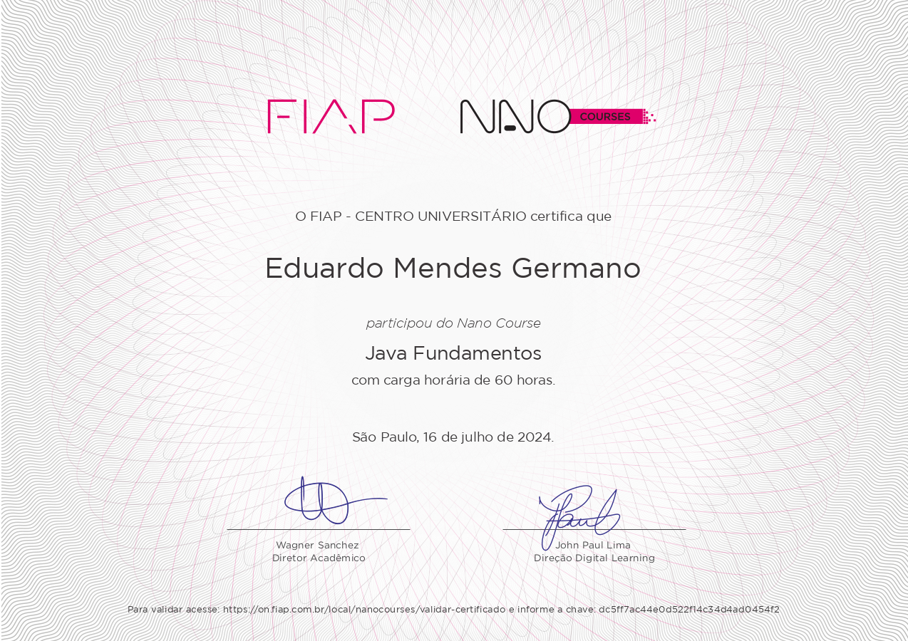

Portfolio
Home Page
Home
Certificates
All About Me
Skills
Home Page
Home
Certificates
About Me
Skills
Hello, I'm
Eduardo Mendes Germano
Java Development Assistant
Latest
Certificates

JAVA Fundamentos
JAVA POO
UML
All Certificates
All About
Me!
At 22 years old , I have amassed a diverse range of professional experiences that have shaped my expertise in the field of technology. My journey began at ENIAC, where I worked as a Development Assistant, gaining foundational knowledge and skills in software development. Following my time at ENIAC , I secured a two-year intership at Samsung SDS where I deepened my understanding of technology and its applications in a corporate environment. This invaluable experience allowed me to work on various projects honing my technical skills and preparing me for my current role. Currently , I serve as a IT Assistant at Samsung SDS , where I leverage my knowledge in Java and Spring/SpringBoot to develop and integrate systems effectively. My responsibilities include working with APIs , managing FTP transfers and maintaning both Linux and Windows servers ensuring seamless operations and functionality across platforms.
Send me a Message
My
Hard Skills
and
Soft Skills
Hard Skills
✔️
Experience in Java
✔️
Experience with Spring Framework
✔️
Knowledge of Spring Boot
✔️
HTML & CSS for front-end development
✔️
JavaScript for dynamic web applications
✔️
REST/RESTful API development
✔️
SQL (Oracle & DB2)
✔️
XML and JSON file manipulation
✔️
Familiarity with Linux and Windows servers
✔️
Version control using Git
✔️
Basic knowledge of Docker and containerization
✔️
Understanding of Agile methodologies
✔️
Database design and optimization
✔️
Front-end frameworks (e.g., React or Angular)
✔️
Unit testing and Test-Driven Development (TDD)
✔️
JPA (Java Persistence API)
✔️
Hibernate for ORM (Object-Relational Mapping)
✔️
Spring Data for data access and manipulation
✔️
Version control using Git and SVN
Soft Skills
✔️
Proactive approach to tasks
✔️
Effective communication skills
✔️
Problem-solving abilities
✔️
Adaptability in changing environments
✔️
Strong teamwork and collaboration
✔️
Time management skills
✔️
Attention to detail
✔️
Critical thinking
✔️
Willingness to learn and take feedback
✔️
Conflict resolution skills
✔️
Leadership potential
✔️
Empathy and emotional intelligence